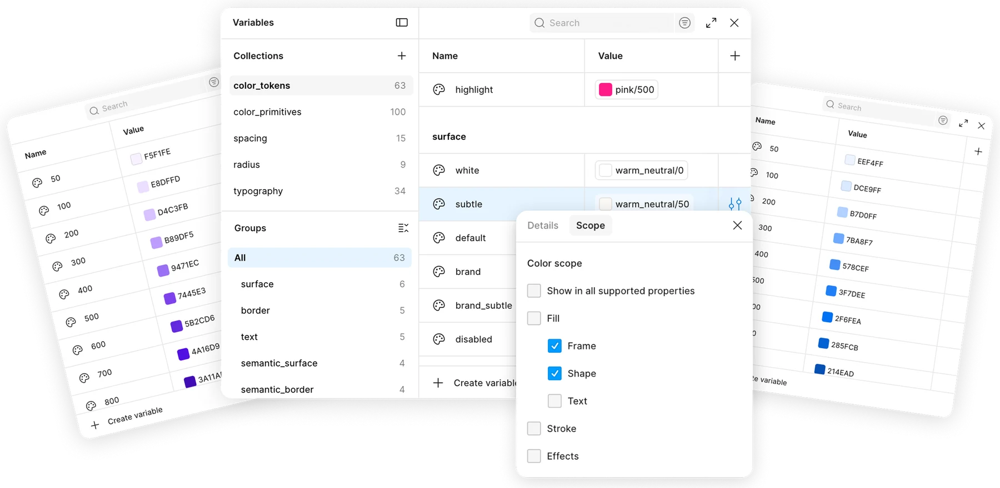

Foundation
Color system

01Primary palette
Primary Purple Palette
Refined tonal progression with smoother chroma transitions. Luxurious, luminous, and modern — without electric or neon quality.
P-50#F5F1FE
P-100#E8DFFD
P-200#D4C3FB
P-300#B89DF5
P-400#9471EC
P-500#7445E3
P-600#5B2CD6
P-700#4A16D9
P-800#3A11AD
P-900#2A0C7F
Warm Neutral Palette
Warm undertone — used for surfaces and borders. Never mix with grey neutrals.
N-0#FFFFFF
N-50#FAF9F5
N-100#F6F4ED
N-200#EDEBDF
N-300#DDD9CE
N-400#C5BFB0
N-500#A09890
N-600#7D756C
N-700#5C554D
N-800#3C3630
N-900#211D19
02Accents
Pistachio
#7D9F3E
#F3F7EC
Lavender
#8C5BBB
#F6F1F8
Butter
#B88E12
#FFFBE8
Grey
#666666
#EEEEEE
03Semantics
InfoHere’s something worth knowing
SuccessThat worked as expected
WarningDouble check before continuing
DangerSomething went wrong
Bricks Design System · Color